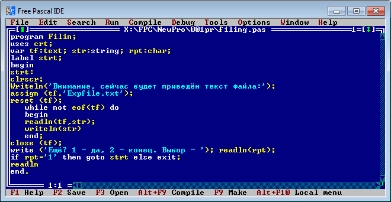
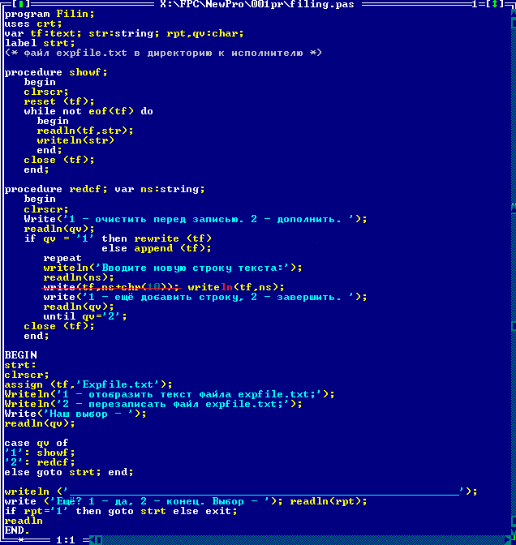
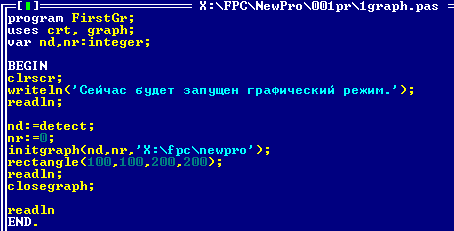

Вторая часть. Здесь будут рассмотрены способы работы с файлами, графическим режимом, то бишь наименее востребованные при обучении, специальные моменты языка.
База конспектов.Первая часть.
Оглавление.
Глава 1. Работа с файлами.
Текстовые файлы, типизированные файлы, нетипизированные файлы.
Текстовые файлы необходимо связывать с переменной, x:text; Суть текстового файла проста -- он состоит из символьных строк. Срока оканчивается символами возврата каретки, он обычно не отображается при редактировании, код ascii -- 13, и перевода строки, код -- 10. В конце файла находится признак end of file, eof, хотя его представление пока не приводится.
Необходимо связать переменную с файлом. Используется процедура Assign (x,'С:\file.txt'); Связывается переменная текстового файла с самим файлом, у которого указывается полный адрес и расширение. Если программа и файл находятся в одном каталоге, то диск указывать не нужно. После применения процедуры все действия с переменной отразятся на файле.
Затем файл необходимо открыть. В зависимости от целей это производится разными способами. Для чтения файла его открытие производится процедурой reset(x); Чтение из файла производится стандартными read/readln с использованием вспомогательных переменных. В завершении операций используется процедура закрытия, close(x);
Финты ушами, но иначе ничего стабильного на этом этапе не приводится. Создаётся переменная, связывается с файлом. Файл пришлось поместить в папку с компилятором, а не сохранённым документом программы, иначе давалась ошибка. Можно было просто указать абсолютный адрес. Файл открывается. Задаётся цикл предусловия со стандартной логической процедурой eof(x); возвращающей true при достижении окончания файла. В цикле происходит построчное чтение и построчный вывод файла на экран. Как происходит индексация строк и как определяется итерация цикла до обнаружения eof -- пока непонятно, верим на слово. Закрываем файл.
Русские символы не читались правильно, и отображение файла было слегка непонятным. Вероятно, это из-за кодировки, и файл либо не прочтётся компилятором идеально, либо нужно создавать его по специальным правилам. С чтением текста пока всё.
Запись в файл. Связка происходит через assign. Открытие файла для записи происводится одной из двух процедур - rewrite(x); - очищает файл для новой информации, append(x); - позволяет дописать информацию дополнительно.
В этом коде все приведённые по книге моменты работы с текстовыми файлами.
Затем рассмотрим типизированные файлы. Они состоят из однородных элементов. Каждый элемент имеет свой индекс. Связка производится той же процедурой assign. Типизированные файлы могут не иметь расширения. Переменная для связки должна быть описана в разделе переменных -- var tf: file of <тип>. Открытие для чтения/записи и закрытие производятся аналогично через reset/rewrite/close. Чтение и запись элементов можно производить только посредством переменных, константы не сработают. Также writeln и readln не используются. При записи файл будет создан, если его не существовало. При чтении файл должен существовать, программа даст сбой. Аналогично для текстового файла. Запись производится процедурой write(tf, x). Элемент добавляется к файлу. Особенность файла во время работы программы -- текущий элемент. Чтение read(tf, x) записывает в переменную x текущий элемент файла, связанного с переменной tf. Текущий элемент также примет новое значение при записи. Процедура seek(tf, n) сделает текущим элемент под номером n. Нумерация элементов начинается с нуля. Функция filepos(tf) возвращает индекс текущего элемента. При последовательной записи в файл с помощью цикла текущй элемент, вероятно, автоматически увеличивается на единицу. Определить количество элементов, или удалить элемент из файла стандартными методами не предусмотрено, или не приведено в книге.
Нетипизированные файлы содержат набор элементов разного типа. Текстовые и типизированные файлы можно открыть как нетипизированные. Var ntf:file. Связка assign. Открытие reset rewrite (ntf, размер единицы информации). Запись в файл blockwrite (ntf,x,количество элементов). Чтение blockread (ntf,x,количество элементов).
Ввиду ограниченного количества примеров с файлами, рассматривать эту тему подробно нет необходимости. Дополнить однажды. Последние несколько моментов для работы с файловой системой. Rename(fp,newname) -- переименовывает неоткрытый файл. Erase(fp) -- удаляет закрытый файл. Mkdir('namedir') -- создать папку. Rmdir(namedir) -- удалить папку, не иеющую содержимого. Chdir(namedir) -- изменение текущего каталога. Filesize(fp) -- возвращает размер файла типа longint.
Глава 2. Нестандартные типы данных.
Перечисляемый тип данных. Пользовательский набор значений, которые нужно объединить для одного типа. Задаётся в раздере TYPE. Пример type name=(petya,vasya,grisha,misha); Переменные этого типа будут иметь только перечисленные значения. Ограничения -- нельзя применять для операций ввода-вывода. Варианты использования -- операции сравнения или присваивания. В примере книги указано, что переменная получает первое из набора значений, и если не переопределяется, то защищает ход программы от сбоев.
Ограниченный тип. Берётся из базового типа, но только порядкового, имеющего чёткую последовательность значений. Type latin='a'..'z'; Если присвоить переменной этого типа неправильный символ, компилятор даст ошибку и закроет программу. То бишь защитной пользы нет.
Запись. Задаётся в разделе TYPE.
type
recname:record
x,y,z:integer;
a,b,c:string;
end;
Можно использовать вложение записи в запись. Применение -- массив элементов типа данной записи. Немного ощущается объектное восприятие. Каждый элемент массива является набором переменных, характеризующих этот элемент. Также хранить можно в файле. Прямой доступ к каждому элементу записи -- recname.x:=777; -- примерно такой.
Множество -- структура, в которой элементы не индексированы. К примеру, алфавит - набор букв языка упорядочен, представлен как массив. Но для написания текстов используются разные комбинации, и позиция каждой буквы в алфавите не имеет значения. Описывается множество в разделе переменных. x:set of тип; x:set of 10..99; x:set of 'a'..'z'; x:set of (one, two, free);
Постоянные множества, что бы это ни значило. Элементы перечисляются к [] скобках. Множество может быть пустым, без элементов.
Над множествами можно производить операции. Пересечение * множеств даёт найденные общие элементы. Сложение даёт множество, сожержащее элементы обоих множеств. Разность даёт множество, из которого убраны присутствующие во втором множестве элементы. Множества можно сравнивать. Равенство и неравенство понятны. Х<У строгое вхождение Х в У, все элементы из Х присутствуют в У, и есть хоть одно иное. Х<=У нестрогое вхождение, даёт истину, если в У есть всё из Х. Существует возможность проверки наличия элемента во множестве. B in [A..D]=true.
Выражения с множествами тоже имеют приоритет операций. * высший, +- средний, in = <> > < последние. Скобки имеют стандартную функцию.
Глава 3. Графика.
Псевдографика являет собой использование символов, с помощью которых можно изобразить таблицы. Набор текста в программе идёт по порядку, но порядок можно игнорировать, переставив курсор в определённое место. Функуия gotoXY(x,y) направляет курсор в текстовом режиме. Набор продолжается с указанной позиции. Можно выделить рабочее окно для набора текста программы. Window(x1,y1,x2,y2) -- сделает окно с ху1 в левом верхнем, и ху2 в нижнем правом углах. Код ниже создаст рабочую область определённого фона и цвета символов. Стоит учесть, что длинный текст программы будет исчезать за границами области.
Window(x1,y1,x2,y2);
textbackground(color);
textcolor(color);
clrscr;
Теперь к сути.
Uses подключает новый модуль graph, содержащий несколько графических элементов. InitGraph содержит три параметра. Номер драйвера, который непонятно из какого индекса вычисляется, но пусть поверим, что он будет 0. Graph содержит функцию detect, которая ноль и возвращает. Номер режима, который тоже будет 0, ибо это 640х480х16 - лучший вариант. Другие значения в эксперименте пользы не принесли. Также стоит учесть, что параметры передаются через переменные. Третий параметр - адрес папки, содержащей файл драйвера. Сейчас всё срабатывает не так, и открывается новое окно для вывода графики, и оно не является полноэкранным или отличным по разрешению. В нём пока не проверена возможность вести действия, кроме рисования первой картинки. Два окна работают немного параллельно. Производим графические действия, и в конце закрываем графический режим.
Для чего нужен курсор в графическом режиме, пока не думаем. Координаты считаются вправо и вниз, поэтому левый верхний 0,0, а правый нижний 1599х899, или определить можно через GetMaxX и GetMaxY. MoveToXY(x,y) переводит курсор. MoveRel(x,y) переводит относительно текущей позиции.
SetBkColor(color); ClearDevice; данная комбинация очистит экран в выбранный цвет. Но этот способ имеет пробелы, якобы потом нельзя будет использовать чёрный текст или объекты. SetFillStyle(style,color); floodFill(x,y,color); данная комбинация назначает стиль заливки, затем через любую точку области, объекта, фигуры, её осуществляет. Второй color задаёт цвет границы, до которой будет произведена заливка.
| emptyfill | цвет фона |
| solidfill | сплошной |
| linefill | горизонтальный штрих |
| ltslashfill | косой |
| slashfill | косой жирными |
| bkslashfill | обратный косой жирными |
| ltbkslashfill | обратный косой |
| hatchfill | прямая клетка |
| xhatchfill | косая клетка |
| interleavefill | частая сетка |
| widedotfill | редкие точки |
| closedotfill | частые точки |
| userfill | мистический стиль пользователя |
SetColor(color); задаёт цвет для рисования следующих фигур.
| rectangle(x1,y1,x2,y2) | Прямотреугольная рамка |
| outtext('текст') | Текст от курсора |
| outtextXY(x,y,'текст') | Текст от параметров |
| bar(x1,y1,x2,y2) | Прямоквадратник. Определяется через setfillstyle. |
| Line() | косая черта |
| LineTo(x,y) | Черта от курсора |
| Arc(x,y,c1,c2,r) | Дуга. с1 и с2 задают угловые координаты начальной и конечной точек. |
| Circle(x,y,r) | Оквадражность. |
| Pieslice(x,y,un,uk,r) | Сектор с углом начала и конца. |
| ellipse(x,y,un,uk,rx,ry) | Эллипс полный или нет. |
| Putpixel(x,y,color) | Точка. |
SetTextStyle(тип,направление,размер) -- определит стиль текста. Тип defaultfont, направление горизонтальное horizdir, размер 1х стандартный.
Bar3D(x1,y1,x2,y2,z,border) - рисует объёмный прямоугольник с указанной глубиной, и возможностью скрыть задние границы. Закрашивать боковые грани нужно отдельно, через floodFill.
Глава 4. Динамические переменные.
Переменные-указатели описываются типом pounter. Uk:pointer; При использовании потребуется добавлять верхнюю скобу.
| ImageSize(x1,y1,x2,y2) | Функция даст размер в рамках области. |
| GetMem(Uk,razm) | Выделяет память нужного размера. |
| GetImage(x1,y1,x2,y2,Uk^) | Записывает в память. |
| PutImage(x,y,Uk^,n) | Ставит из памяти. Номер режима 0 стандартного результата. |
| Freemem(Uk,razm) | Освобождает память. |
Глава 5. Аудио.
Sound(n);
delay(ms);
Nosound;
Высота звука определяется физикой. Частота волны, определяющая высоту звука, должна будет соответствовать получаемой ноте. Длительность получится процедурой задержки выполнения.
На этом практически всё. Можно выписать все фрагменты кода, для опытной практики, можно выписать таблицы всех неупомянутых стандартных объектов языка, но в этом теперь немного смысла. Вряд ли когда придётся возвращаться к данному языку в профессиональных разработках. В других книгах могут быть тоже интересные материалы, но примерно сейчас можно переходить на новую ступень.
В начало документа.